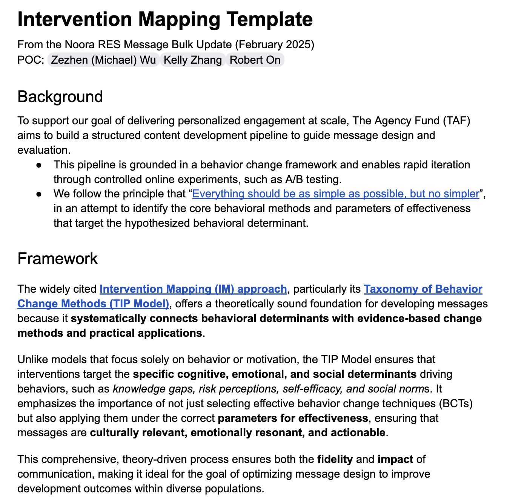

Intervention Mapping framework for helping NGO teams conceptualize, structure, and test message design
Why this matters
AI can personalize communication at scale, but NGO teams still need a shared design language for deciding what behavior, determinant, method, and message parameter each intervention is targeting.
Name the behavior the message should move.
Identify the determinant: knowledge, risk perception, self-efficacy, social norms, or another barrier.
Choose the change method and its practical application before generating message variants.
Turn the structure into tests so teams can learn which message ingredients work, for whom, and why.
